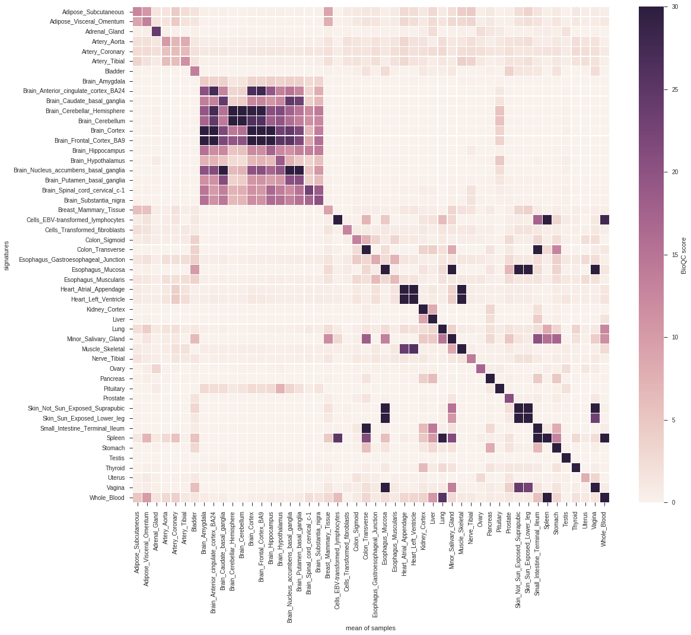
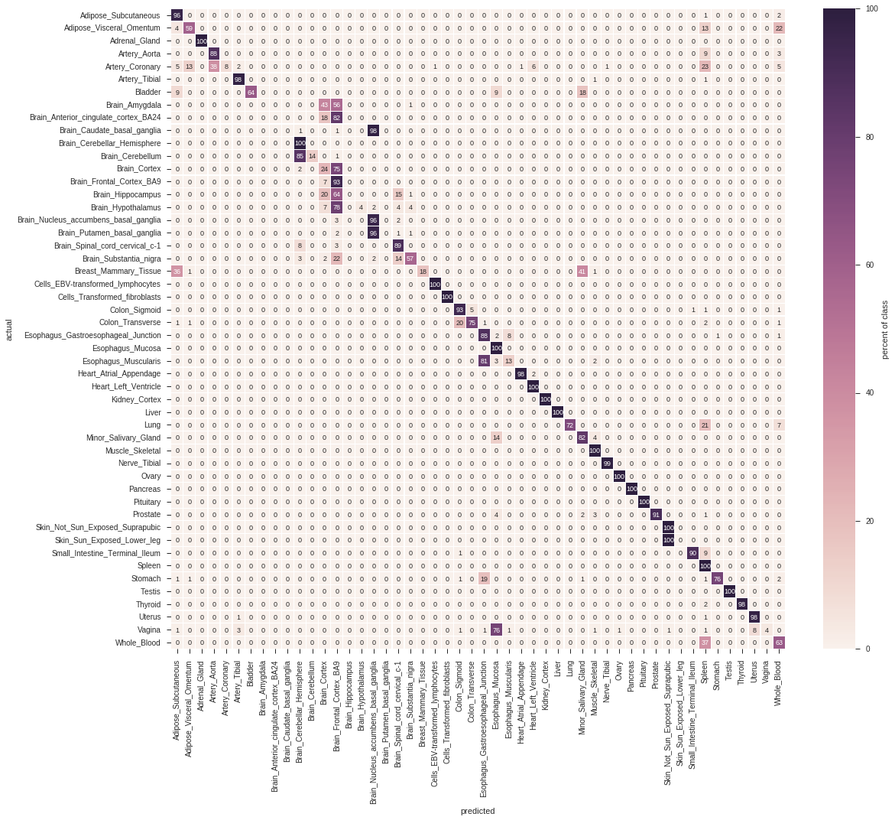
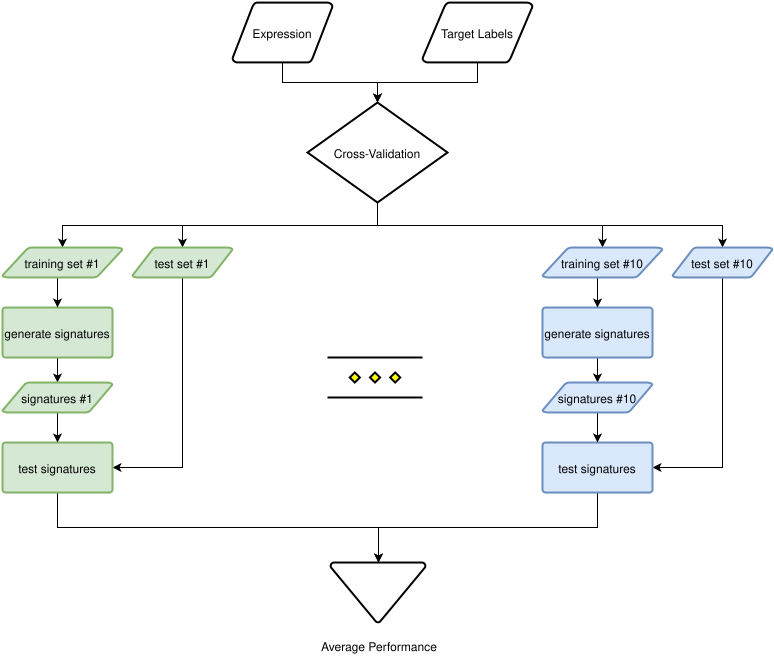
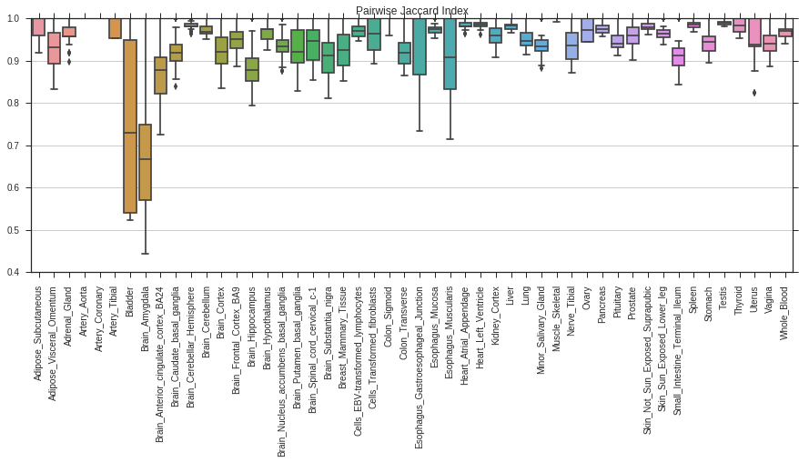

Creating signatures¶
pygenesig shippes with multiple classes for signature generation. Here, we use the GiniSignatureGenerator. All methods are described in the API documentation.
First, we load the expression data and target annotation we prepared earlier:
from pygenesig.file_formats import read_expr, read_target
expr = read_expr("expression_matrix.npy")
target = read_target("target.txt")
Now, we can generate signatures with the signature generator of our choice:
from pygenesig.gini import GiniSignatureGenerator
sg = GiniSignatureGenerator(expr, target)
signatures = sg.mk_signatures()
Which will result in something like
{'Adipose Tissue': {81,
82,
250,
304,
309,
...}
Testing signatures¶
pygenesig shippes with the BioQCSignatureTester. The method is described in more
detail here.
To test signatures, we initalize the tester with the gene expression data and the target labels. Then, we can test different signature sets on the data and retrieve a score matrix.
from pygenesig.bioqc import BioQCSignatureTester
st = BioQCSignatureTester(expr, target)
score_matrix = st.score_signatures(signatures)
This is a score matrix visualized as a heatmap:
from pygenesig.visualization import aggregate_scores, plot_score_heatmap
sig_labels = st.sort_signatures(signatures)
heatmap = aggregate_scores(sig_labels, score_matrix, target)
plot_score_heatmap(heatmap)

Note
As python dictionaries have no particular order you can use SignatureTester.sort_signatures() to obtain a reproducable order of the signatures.
We can boil down signature testing to a classification task: A sample is classified as a certain tissue, if the corresponding signature scores highest. pygenesig provides a convenient method to predict class labels:
actual, predicted = st.classify(signatures, score_matrix)
From the list of actual and predicted labels, we can create a confusion matrix. Pygenesig provides convenient wrapper method to create the confusion matrix, but essentially you can use whatever performance measure from scikit-learn.
confusion_matrix = st.confusion_matrix(signatures, actual, predicted)
This is the confusion matrix derived from the above score matrix:
from pygenesig.visualization import plot_confusion_matrix_heatmap
plot_confusion_matrix_heatmap(confusion_matrix * 100, sig_labels)

Putting it together: crossvalidation¶
To avoid overfitting sample-specific noise, we can use crossvalidation to create and test signatures. To this end, we divide our data into 10 independent, stratified folds (i.e. every fold contains about the same amount of items from every class). We always use 9 of the 10 folds for generating the signatures and apply them to the remaining fold for testing. This procedure is illustrated in the following flowchart:

You can use scikit-learn StratifiedKFold
to split your data into folds and then apply a SignatureGenerator and a SignatureTester
on the resulting testing and training sets.
In pygenesig this is already implemented in cv_score (documentation.
The method automatically performs the cross validation, given a gene expression matrix and target annotation:
from pygenesig.validation import cv_score
from pygenesig.gini import GiniSignatureGenerator
from pygenesig.bioqc import BioQCSignatureTester
expr_file = "exprs.npy"
target_file = "target.csv"
sig_list, res_list, train_list, test_list = cv_score(expr_file,
target_file,
GiniSignatureGenerator,
BioQCSignatureTester)
The cross-validation function uses dask for multiprocessing. Dask is a scalable, highly customizable framework for running python code in parallel. It supports different schedulers for code execution. We recommend using the distributed scheduler. It allows you to run analyses in parallel on a high performance cluster, but also provides a convenient way to parallelize on a single machine.
The objects returned by cv_score are so-called dask-graphs, i.e. instructions for dask how to
obtain a result, which can be sent to a scheduer for actual computation. This is what we do in the next
step using the distributed scheduler.
from dask import compute
from dask.distributed import Client, LocalCluster
cluster = LocalCluster(n_workers=10, threads_per_worker=1)
client = Client(cluster)
signatures, scores, train_inds, test_inds = compute(sig_list, res_list, train_list, test_list,
get=client.get)
Now we obtained a list of signatures, score matrices and the indicies of the samples used for training and testing in each fold. We can derive an average score matrix or an average confusion matrix from these results.
In order to assess the quality of a signature it is also interesting to see, how much a signature varies between the different folds. To this end, we calculate the pairwise jaccard index of the signatures between all folds:
import seaborn as sns
from pygenesig.tools import pairwise_jaccard_ind
from pylab import *
import pandas as pd
pairwise_jaccard = pairwise_jaccard_ind(signatures)
fig, ax = subplots(figsize=(15,5))
data=pd.DataFrame(pairwise_jaccard)
sns.boxplot(data=data, ax=ax)
ax.set_title("Pairwise Jaccard Index")
ax.set_xticklabels(data.columns, rotation=90);

Case studies¶
We have successfully applied pygenesig and pygenesig-pipeline to evaluate methods for signature generation and to compare the performance of signatures on different datasets. Here are some of the results as jupyter notebooks which also serve well as an example on how to apply pygenesig.
- Cross validation: Full working example of cross-validation on GTEx data.
- Grid search for parameter optimization: Systematic test of different parameters for the GiniSignatureGenerator. We found, that gini-index is a robust method for signature generation over a wide range of parameters.
- Cross-platform and cross-species validation: Validation of signatures on a different platform and organism. We generated gene signatures on the GTEx dataset (human, next generation sequenceing) and applied them to a mouse dataset (Affymetrix microarray). For most of the tissues, the signatures are still able to identify their respective tissue.
- GTEx vs. FANTOM5: Validate signatures generated on the GTEx dataset on data from FANTOM5.
More examples are available from the pygenesig-example repository.